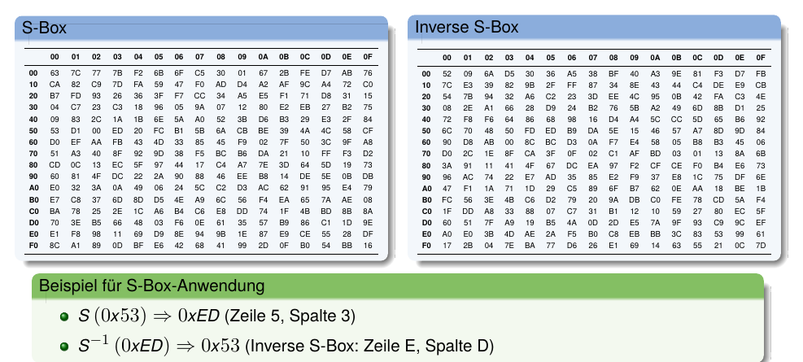
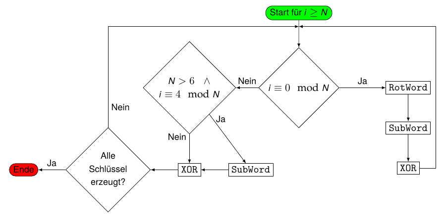
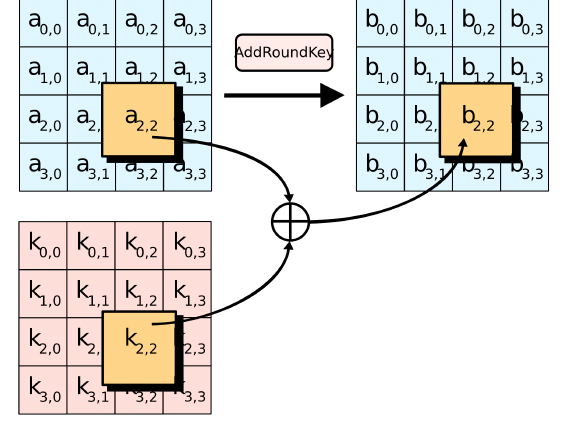
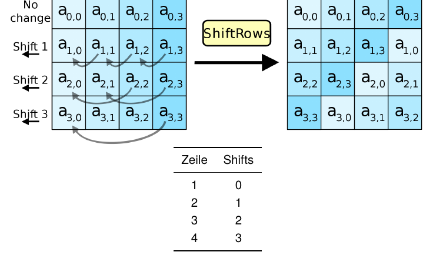
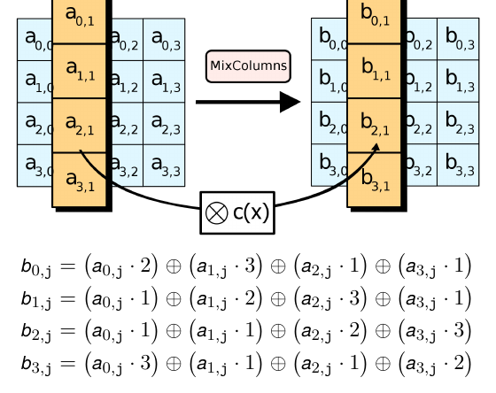
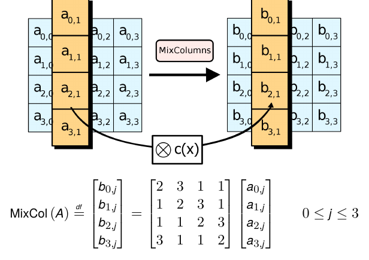

AES

Prof. Dr. Lukas Iffländer
HTW Dresden
03.08.2026
Agenda
- 01Entwicklung
- 02Grundlagen
- 03AES-Überblick
- 04KeyExpansion
- 05Rundenoperationen
- 06Sicherheit
Entwicklung
- 1990er DES mit 56 Bit nicht mehr ausreichend sicher gegen Brute-Force-Angriffe
- 1997 offene Ausschreibung durch NIST
- Kriterien:
- symmetrischer Algorithmus und Blockchiffre
- Blocklänge 128 Bit
- Schlüssellänge 128, 192 und 256 Bit
- leicht in Hard- und Software implementierbar
- überdurchschnittliche Leistung in Hard- und Software
- gegen alle bekannten Kryptoanalyseverfahren resistent
- für Einsatz in Smartcards geringer Ressourcenbedarf
- frei von Lizenzgebühren und Patenten
- Kriterien:
- 2000 Rijndael Algorithmus als Sieger gekürt
- 2001 Standardisierung von AES
Grundlagen
Rijndaelchiffre mit:
- Bytes werden als Elemente des Körpers \(F_{256}\) interpretiert.
- Blockgröße 128 Bits
- Schlüssellänge 128, 192 oder 256 Bit
- Schlüssellänge definiert die Anzahl von Verschlüsselungsrunden \(R\):
- 128 Bit \(\rightarrow R = 10\)
- 192 Bit \(\rightarrow R = 12\)
- 256 Bit \(\rightarrow R = 14\)
- AES arbeitet auf einer \(4 \times 4\) Matrix von Bytes
Word
Ein Word ist eine Sequenz von 4 Bytes (32 Bit). AES arbeitet grundsätzlich mit Words.
Überblick
KeyExpansion: \(R + 1\) Rundenschlüssel werden ermittelt
Anfangsrunde:
- AddRoundKey - jedes Byte wird mit dem Rundenschlüssel durch bitweises XOR kombiniert
Runden (wiederholt \(R - 1\) mal):
- SubBytes - nichtlineare Substitution durch Look-Up-Table (wie S-Box bei DES)
- ShiftRows - Shiften jeder Zeile
- MixColumns - Mischoperation, welche die Spalten kombiniert
- AddRoundKey
Abschlussrunde:
- SubBytes
- ShiftRows
- AddRoundKey
KeyExpansion
- \(N =\) Blockgröße in 32-Bit-Words
- 4 für 128 Bit
- 6 für 192 Bit
- 8 für 256 Bit
- \(K_0, K_1, \ldots, K_{N-1}\) sind die Words des Schlüssels
- \(R =\) Anzahl der Runden
- \(W_0, W_1, \ldots, W_{4(R+1)-1}\) sind die Wörter der Rundenschlüssel
- Rundenkonstanten
\[ rcon_i = [rc_i\quad 0x00\quad 0x00\quad 0x00] \]
mit
\[ rc_i = \begin{cases} 1 & \text{if } i = 1 \\ 2 \cdot rc_{i-1} & \text{if } i > 1 \text{ and } rc_{i-1} < 0x80 \\ (2 \cdot rc_{i-1}) \oplus 0x11B & \text{if } i > 1 \text{ and } rc_{i-1} \ge 0x80 \end{cases} \]
\((0x11B\) entspricht dem irreduziblen Polynom \(x^8 + x^4 + x^3 + x + 1)\)
KeyExpansion
S-Box and Inverse S-Box

KeyExpansion
RotWord
RotWord ([b0 b1 b2 b3]) = [b1 b2 b3 b0]
SubWord
SubWord ([b0 b1 b2 b3]) = [S (b0) S (b1) S (b2) S (b3)]
Algorithmus
\[ W_i = \begin{cases} K_i & \text{if } i < N \\ W_{i-N} \oplus \text{SubWord}(\text{RotWord}(W_{i-1})) \oplus \text{rcon}_{i/N} & \text{if } i \geq N \text{ und } i \equiv 0 \ (\text{mod } N) \\ W_{i-N} \oplus \text{SubWord}(W_{i-1}) & \text{if } i \geq N,\ N > 6,\ \text{und } i \equiv 4 \ (\text{mod } N) \\ W_{i-N} \oplus W_{i-1} & \text{sonst} \end{cases} \]
KeyExpansion
Grafische Darstellung

AddRoundKey

ShiftRows

MixColumns

MixColumns

Bekannte Anwendungen
- IEEE 802.11i (z. B. eduroam)
- WPA2
- SSH
- IPsec
- IP-Telefonie
- Skype
- Festplattenverschlüsselung (Windows, macOS, Linux)
- 7zip, RAR
Sicherheit
Brute Force
Komplexität AES 256 Bit
Benötigte Versuche: \(2^{256} = 1{,}2 \cdot 10^{77}\)
Annahmen
- ein Versuch = 14 Runden \(\times\) 16 Bytes = 224 Rechenschritte
- moderne Desktopgrafikkarte: 48 TFlops = \(48 \cdot 10^{12}\) Flops
Dauer
\(0{,}54 \cdot 10^{66}\ s = 0{,}62 \cdot 10^{61}\ d = 1{,}7 \cdot 10^{58}\ a\)
- Brute-Force-Angriff mit aktueller Hardware nicht durchführbar.
Sicherheit
Schwächen
- Gute Hardwareimplementierbarkeit erleichtert Entwicklung von Angriffshardware
- Bestimmte “schwache” Schlüssel können die effektive Sicherheitsmarge um bis zu 5 Runden reduzieren (theoretisch)
- AES lässt sich als großes Gleichungssystem darstellen, was algebraische Angriffe ermöglicht
- Aus einem beliebigen Rundenschlüssel lassen sich 128 Bit des Ausgangsschlüssels rekonstruieren
- Side-Channel-Angriffe (Timing, Stromverbrauch) bei ungeschützten Implementierungen möglich
Hinweis
Alle bekannten Schwächen sind bisher nur von theoretischer Bedeutung und ermöglichen keine praktischen Angriffe auf korrekt implementiertes AES.
Sicherheit
Angriffe
Biclique-Angriff (2011)
- Von Dmitry Khovratovich, Ivica Nikolić und Christian Rechberger
- Reduziert theoretische Komplexität auf \(2^{254{,}4}\) für AES-256
- Praktisch nicht durchführbar (nur geringfügig besser als Brute Force)
Kettenbruch-Angriff (2002)
- Durch Niels Ferguson et al.
- Darstellung von AES als BES (arbeitet auf 128-Byte-Blöcken)
- Theoretische Reduktion der Komplexität auf \(2^{100}\)
- Nur von akademischem Interesse
Sicherheit
Angriffe II
Angriff durch verwandte Schlüssel (2009)
- Ausnutzung von Schwächen in der Schlüsselexpansion
- Theoretische Komplexität: \(2^{99{,}5}\) für AES-256
- Erfordert unrealistische Annahmen (Angreifer kann verwandte Schlüssel wählen)
Bewertete Aufgabe
Aufgabenstellung
Implementierung von AES-128
- Programmiersprache: C/C++
Hinweis
Nutzen Sie keine fertigen AES-Bibliotheken. Ziel ist das Verständnis des Algorithmus!
Vielen Dank!
Prof. Dr. Lukas Iffländer
HTW Dresden
03.08.2026

03.08.2026 / AES / HTW Dresden / Prof. Dr. Lukas Iffländer